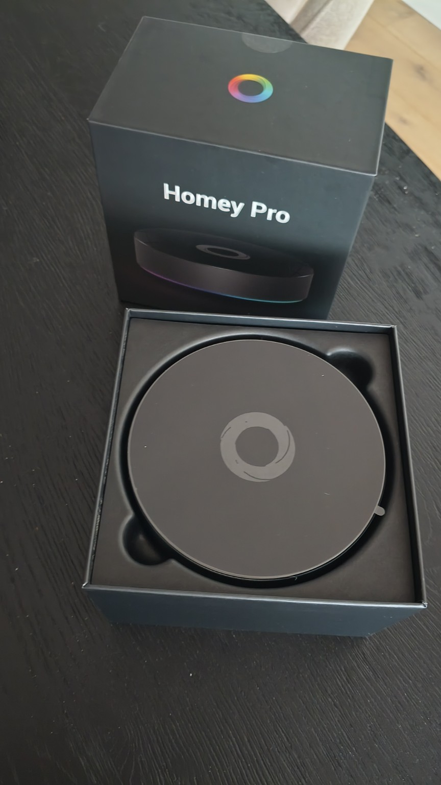

Soms weet je pas dat een upgrade goed is wanneer je er na een paar dagen eigenlijk niet meer bij stilstaat. Lampen reageren, flows lopen door en apparaten doen gewoon wat ze moeten doen. Geen gedoe, geen nadenken. Dat is eigenlijk precies wat de Homey Pro 2026 hier in huis doet.
Ik kom zelf vanaf de Homey Pro 2023, maar mijn Homey-verhaal begon al veel eerder met die inmiddels haast nostalgische witte Kickstarter-bol. Daardoor zegt een tabelletje met specificaties me maar de helft. Leuk meer geheugen, maar wat merk je daar nu echt van wanneer je huis vol hangt met sensoren, schakelaars, Homeyduino-projecten en flows? En omdat ik tegelijk de Homey Energy Dongle heb aangesloten, werd deze overstap meteen wat interessanter dan alleen een nieuwe hub op dezelfde plek zetten.
Eindoordeel
Geen revolutie dus, wel een duidelijke verfijning. In mijn installatie voelt de Homey Pro 2026 merkbaar stabieler en met de Energy Dongle erbij wordt vooral het energiegedeelte eindelijk echt interessant.
Wat is het?
De Homey Pro 2026 is de nieuwste versie van Homey's lokale smart home hub en eerlijk is eerlijk: Athom heeft het wiel dit keer niet opnieuw uitgevonden. Die verrassing kwam later in de vorm van de Homey Portal. De basis is nog altijd die van de Homey Pro 2023. Dezelfde omgeving, dezelfde centrale plek in je smart home en dezelfde gedachte dat zoveel mogelijk lokaal moet blijven draaien. Het grote verschil zit in het werkgeheugen: 4 GB RAM in plaats van 2 GB. De quad-core 1,5 GHz processor en 8 GB opslag zijn gelijk gebleven.
- Homey Pro 2026 → het lokale brein voor apparaten, apps, Flows, Advanced Flows en automatiseringen.
- Homey Energy Dongle → koppelt de slimme meter aan Homey zodat energiegegevens binnen Homey Energy zichtbaar worden.
En juist daar wordt deze combinatie interessant. Gebruik je Homey voor drie lampen en een slimme stekker, dan is dit misschien wat overdreven en biedt Athom goedkopere alternatieven. Maar wanneer Homey, zoals hier, zo langzamerhand het centrale zenuwstelsel van je huis is geworden, dan telt ieder beetje extra ademruimte.
Eerste indruk en gebruikservaring
Wie een Homey Pro 2023 naast deze nieuwe versie zet hoeft geen zoek-de-verschillen-spelletje te verwachten. Van buiten gebeurt er weinig en wat mij betreft is dat prima. Ik koop een smart home hub tenslotte niet omdat ik iedere twee jaar een nieuw kleurtje op de kast wil. Belangrijker is wat er gebeurt wanneer hij eenmaal staat te draaien.

En daar zit voor mij dus de winst. Mijn installatie voelt stabieler en net wat sneller dan op de Homey Pro 2023. Verwacht niet dat een lamp ineens met lichtsnelheid aangaat, zo spectaculair is het niet. Het is meer het totaalplaatje: Homey lijkt minder te hoeven nadenken en de hele installatie voelt wat ruimer aan.
Dat is ook precies wat je van de belangrijkste hardwarewijziging zou verwachten. Met 4 GB RAM heeft de nieuwe Homey twee keer zoveel werkgeheugen als zijn voorganger. Heb je veel apps, apparaten en uitgebreidere flows draaien, dan is die extra marge wat mij betreft geen overbodige luxe.
Overzetten dan maar. Ik heb mijn bestaande backup teruggezet en het grootste gedeelte verhuisde netjes mee. Dit proces verliep vrij soepel, maar nam wel enige tijd in beslag.
Mijn zelfgebouwde Homeyduino-apparaten leken er weinig last van te hebben. Even de stekker eruit en opnieuw aanzetten en daarna gingen ze meteen verder alsof er niets gebeurd was. Daar werd ik eerlijk gezegd behoorlijk blij van, want ook bij je eigen zelfbouws sensoren heb je weinig zin om na een nieuwe Homey alles weer opnieuw te moeten koppelen.
Wie zelf met Homeyduino bouwt, kan bijvoorbeeld kijken naar mijn Homeyduino licht- en klimaatsensor, de BH1750 lichtsensor met ESP32 of mijn uitleg om Homeyduino geschikt te maken voor moderne ESP32-C3 en ESP32-C6 boards.
Het grootste struikelblok bij deze overgang zijn echter de Fibaro Walli Roller Shutters. Die moeten allemaal opnieuw gekoppeld worden. Of ik dat de nieuwe Homey echt kan aanrekenen, is overigens de vraag: ook op het Homey-forum duiken regelmatig berichten op over koppelproblemen met deze modules.
Pluspunten
- Hier in huis voelt de Homey Pro 2026 stabieler en net wat vlotter aan dan mijn Homey Pro 2023.
- Het dubbele werkgeheugen geeft meer ruimte aan apps, apparaten en onvermijdelijk weer nieuwe smart home-projecten.
- Mijn Homeyduino-projecten bleven na het terugzetten van de backup verrassend genoeg gewoon gekoppeld.
- Met de Energy Dongle staan mijn actuele energiegegevens eindelijk op de plek waar ik ze toch al wilde hebben: in Homey.
Minpunten
- Kom je van de Homey Pro 2023, verwacht dan vooral verfijning en geen compleet nieuwe generatie.
- De backupmigratie was niet helemaal vlekkeloos; een paar apparaten moest ik opnieuw koppelen.
- Bij mijn slimme meter had de Energy Dongle externe USB-voeding nodig. Zonder die kabel viel de verbinding steeds weg.
- Draait je Homey Pro 2023 als een zonnetje, dan is de vraag vooral of je voor extra geheugen en wat meer marge opnieuw wilt investeren.
Integratie en compatibiliteit
Bij een centrale smart home hub vind ik de migratie eigenlijk minstens zo belangrijk als de hardware. Een nieuw kastje neerzetten is zo gebeurd, maar niemand heeft zin om daarna tientallen apparaten, flows en automatiseringen opnieuw op te bouwen. Ik in ieder geval niet.
- Het grootste deel van mijn bestaande Homey-installatie kwam via de backup gewoon mee naar de Homey Pro 2026.
- Enkele apparaten moesten alsnog opnieuw uit- en ingeschakeld worden.
- Alle werkende flows bleven probleemloos behouden en hoefden niet aangepast te worden.

De Energy Dongle zelf was zo toegevoegd. Inpluggen op de slimme meter, koppelen en niet veel later verschenen de gegevens in Homey. Klaar, zou je denken. Alleen verloor de dongle hier zonder externe voeding telkens zijn verbinding.
USB-kabel eraan, voeding erop en het probleem was meteen verdwenen. Dat is ook precies waarom die aansluiting erop zit, want niet iedere slimme meter levert via de P1-poort genoeg stroom. Mocht je dus hetzelfde meemaken: eerst die kabel proberen voordat je je halve netwerk uit elkaar trekt.
En dan wordt het leuk. Energie zat natuurlijk al langer in Homey, maar met de echte gegevens uit mijn slimme meter krijgt het ineens veel meer betekenis. Je kijkt niet meer alleen naar wat een losse stekker of lamp volgens Homey gebruikt, maar ziet wat er op dat moment met je complete woning gebeurt.
Voor wie is dit een goede keuze?
Voor wie is deze Homey dan bedoeld? Wat mij betreft vooral voor mensen bij wie Homey allang meer doet dan alleen de lampen aan en uit zetten. Heb je tientallen apparaten, een aardige verzameling apps, Advanced Flows en misschien nog wat eigen Homeyduino- of Matter-projecten, dan is wat extra hardwaremarge gewoon prettig.
Kom je nog van een oudere Homey, bijvoorbeeld één van de oorspronkelijke witte modellen of een Pro van vóór 2023, dan is de stap natuurlijk een stuk groter. Als ik terugdenk aan mijn eerste Kickstarter-bol is het eigenlijk bizar hoeveel er ondertussen veranderd is. Wat ooit vooral een leuke gadget voor domoticaliefhebbers was, vormt hier inmiddels gewoon de ruggengraat van het huis.
De Energy Dongle past daar wat mij betreft mooi bij. Zeker wanneer je niet alleen dingen automatisch wilt laten gebeuren, maar ook benieuwd bent wat al die apparatuur, zonnepanelen en andere energiegebruikers onderaan de streep nu eigenlijk samen doen.
Voor wie juist niet?
Heb je thuis een paar slimme lampen, een stekker en misschien een thermostaat, dan is een Homey Pro 2026 waarschijnlijk meer Homey dan je nodig hebt. En draait je Homey Pro 2023 al maanden zonder ook maar één hik, dan ga ik je ook niet vertellen dat je nu meteen je portemonnee moet trekken.
De processor en opslag zijn tenslotte hetzelfde gebleven. De winst zit vooral in het dubbele werkgeheugen en dus in extra ruimte voor nu en later. Verwacht geen sprong alsof je een stokoude pc vervangt door het nieuwste model; zo groot is het verschil simpelweg niet.
Aandachtspunten
- Maak vooraf absoluut een actuele backup, maar reken erop dat een enkel apparaat alsnog opnieuw gekoppeld wil worden.
- Heb je Homeyduino-projecten draaien, loop ze na de migratie even één voor één langs. Hier bleven ze gelukkig gewoon gekoppeld.
- Valt de Energy Dongle steeds weg? Sluit dan eerst de meegeleverde USB-kabel met externe voeding aan voordat je uren naar een niet-bestaand netwerkprobleem gaat zoeken.

Conclusie
De Homey Pro 2026 is waarschijnlijk niet de spannendste Homey die Athom ooit heeft uitgebracht. Gek genoeg bedoel ik dat juist als compliment.
Na de originele witte Kickstarter-Homey, de nodige zelfbouwavonden met Homeyduino en daarna de Homey Pro 2023 hoef ik niet meer ieder jaar een spectaculaire nieuwe truc. Ik wil vooral dat het hart van mijn slimme huis snel en betrouwbaar blijft terwijl ik er ondertussen natuurlijk gewoon weer nieuwe apparaten en flows aan blijf hangen.
En precies daar scoort deze versie punten. De Homey Pro 2026 voelt hier stabieler, heeft dankzij het extra geheugen meer ruimte voor de toekomst en nam via de backup vrijwel mijn hele bestaande installatie mee. Dat een paar apparaten opnieuw gekoppeld moesten worden was vervelend, maar dat juist mijn Homeyduino-projecten probleemloos bleven staan maakte veel goed.
De Energy Dongle is daarbij stiekem misschien wel de leukste toevoeging. Nadat ik het verbindingsprobleem simpelweg met de meegeleverde USB-voeding had opgelost, zag ik ineens in dezelfde omgeving waarin mijn huis wordt aangestuurd ook wat dat huis op energiegebied aan het doen is.
En dat is uiteindelijk nog steeds mijn idee van een echt Smart Home: niet zoveel mogelijk losse slimme apparaten verzamelen, maar zorgen dat alles met elkaar samenwerkt en dat informatie ook daadwerkelijk iets oplevert. De Homey Pro 2026 doet dat niet totaal anders dan zijn voorganger, maar hier wel net wat sneller, ruimer en vooral rustiger. Gebruik je Homey net zo intensief als ik, of ben je toe aan een stevige basis waarop je de komende jaren verder kunt bouwen, dan zou de Homey Pro 2026 samen met de Energy Dongle absoluut bovenaan mijn lijstje staan.